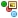

Save <component, folder or solution> as template wizard
The Save <component, folder or solution> as template wizard allows the user to create or update an existing template. A template can be created from three different kinds of items - a component, folder or solution.
A template will keep the internal relationships between components as well as the associated publishing rules and the allowed component types in the folders. It will contain all the information needed to recreate the folder structure. A folder or solution template does not need to contain components.
A template is stored in the Content Repository and is indicated by a small overlay icon. For example, when saving a Decision Process Flow as a template, the standard icon is , while the template icon looks like this 
{kind=link}
{kind=link}
Every time a template is updated, a new version of the template is saved in the history. Each saved version of the template is given a revision number. A template's history details can be viewed in the History window.
A template can be consumed either from the local Content Repository or from a remote repository using the Add from template process. For more information about templates, refer to the Content Management overview topic.
|
Before creating a template, ensure:
|
|
|
When creating a template from a folder, any component dependencies must be within the selected folder (or within its sub-folders), otherwise folder template creation will not be allowed. A message will be displayed if components from other folders are required. |
{kind=link}
The Save <component, folder or solution> as template wizard consists of the following screens:
The Select target screen is the first screen of the wizard. It allows the user to select the target location, to either specify a new template and its name, or to select an existing template to perform an update.
| The component, folder or solution name is displayed in the wizard title bar for example, Save <Resources> as template. |
{kind=link}
This screen consists of the following:
Content Repository - displays the target folders in a hierarchical tree structure, allowing the user to select where to save the new template, or to navigate and select an existing template to perform an update
Name - allows the user to specify the name of the new template (when updating an existing template, this field will be greyed out)
The Configure options screen is the second screen of the wizard. It allows the user to configure the template settings. In the case of an update, the option fields will be populated with the values from the previous revision of the template.
{kind=link}
This screen consists of the following:
External Link (URL): - a user defined URL that links to a document providing information about the template being saved (for example, the specification document)
Template Description: - a user-entered description of the template (it is recommended to add a description to the template)
Retain unused characteristic(s):
- checked - all characteristics (used and unused) in a Logical Data Source or Logical Data Model will be saved in the template.
- unchecked - any unused characteristics in a Logical Data Source or Logical Data Model will not be saved in the template. A Logical Data Source (not bound to an Entity Model) or Logical Data Model that has no characteristics (all its unused characteristics will be removed by the Save as template process) will also not be saved in the template.
|
If the selected component is a Logical Data Source, Logical Data Model or Entity Model, the Retain unused characteristic(s) checkbox will be greyed out and set to checked. |
|
|
When updating a previously consumed template, if the Retain unused characteristic(s) option is unchecked and the Enable template consumption tracking is checked, any unused components in the previous version that have been placed in the Recycle Bin will not be reflected in the Template Structure view in the next step of the wizard (step 3. Add notes). In step 3, these components will be displayed as New in the Status column but will be placed in the Recycle Bin after the completion of the Save as template process. |
|
During the Save as template process, a Logical Data Source (bound to an Entity Model) that has no characteristics (all its unused characteristics will be removed by the Save as template process), will: • be renamed (assigned a suffix ‘_deprecated’) • include a single dummy characteristic to prevent an invalid Data Model structure • be moved to the Recycle Bin |
Enable template consumption tracking:
|
If the Save <component, folder or solution> as template wizard detects a component(s) in the selection that has not been checked into the repository, the Enable template consumption tracking option will be deactivated. To enable the tracking option, ensure all changes are checked in prior to using the wizard. When the component(s) has been checked in, the tracking option will be activated by default. When the template has been consumed into a solution, its tracking information is used to evaluate the state of the template(s) and informs the user about any changes made to the template components. |
- checked - the information that links the template to the repository that will be used to create the template will be saved. When the template has been consumed into a solution, its tracking information can be viewed in the Consumed Templates window. The tracking information is used to evaluate the state of the template(s) and informs the user about any changes made to the template components.
- unchecked - the tracking information will not be saved in the template
The Add notes screen is the final screen of the wizard. It displays information about the template that will be created or updated. It also allows the user to add notes to the template components.
{kind=link}
This screen consists of the following:
Table Columns
Template Structure - displays the template components in a hierarchical tree structure
Status - displays the state of the component compared to its previous version in the template:
- New - when adding a new component to an existing template for the first time (its version will be set to 1.0)
- No change - the component has not been changed in the template (its version remains unchanged)
- Deleted - the component has been deleted from the template (its version is not applicable)
- Updated - the component has been updated in the template (its version will be increased)
Version - displays the version number of the component in the template
Source Revision - displays the component revision number used to create the template, as retrieved from the Solution Repository. If the component is located in the user area, the revision number in the user area will be used (indicated by Local based on revision <number>), otherwise the revision number from the shared area will be used instead.
| By default, only the Source Updated Data column will be hidden from view. To show (or hide) a column, right click on any column header and select the column name of your choice. |
Source Updated Date - displays the updated date and time of the component that will be used to create the template, as retrieved from the Solution Repository
Source Author - displays the author of the component that will be used to create the template, as retrieved from the Solution Repository
Notes - allows the user to add notes to describe any changes made to the component using the Notes Editor (a standard text editor)
When the user clicks Finish, the template job is sent to the Job Submission Console for execution.